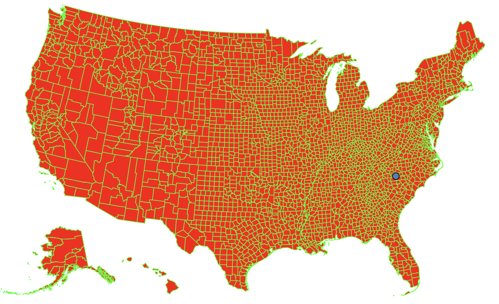

Geographical Maps in BRIDGES
How does the Map API work BRIDGES?
Maps in BRIDGES are retrieved from GeoJSON descriptions of the map geometry. Currently, we support both the US map and World map. The current interface permits US maps to be colored by state or by county. The color can reflect any user chose attibute, such as population, sales, crime rates, etc. and dependent on the data being mapped to the state. Counties
Counties for the US map can also be displayed and attributes assigned similar to states. For instance, election data can be mapped to each county for a more detail look of voting patterns over the years.
In addition, maps can be a background for other BRIDGES data structures. For instance, you can imaging graph problems being solved as a function of the US cities (Minimum Spanning Tree, Traveling Salesman Problem, etc.)
In this tutorial, we will illustrate the basic UI capabilities of
BRIDGES Maps that will be helpful in building map based assignments.

This tutorial gives an introduction to the use of maps in BRIDGES.
See also
1. Getting Started: Build a US Map with State boundaries
In the first part of the tutorial, we will create a US map of all states showing each state's boundary. A city is marked as a linked list node and will be the data structure for this tutorial. The map uses a default color for each state's boundary and a default fill color.
If you follow the URL given to you when the application runs, it will get to the Bridges webpage that shows your output. You do not need to be logged into your BRIDGES account to see the output. If you are logged into your account, the output will show up in your gallery.
2. Drawing US Map with all counties
The map you created in the first part had just the states drawn as polygons. Here will add the counties for each state. The map continues to use default attributes for boundary and fill colors.
Check out the links to the classes (listed above) that supports these attributes and also details the possible colors and shapes you can use and how to specify them.
Here is the code that generated the map output with counties.
3. Advanced Features: Displaying specific states, choosing attributes.
In the last part of this tutorial, we show some advanced and customizable features with maps. We show the ability to select specific states to be drawn with custom attributes fill and boundary colors. This will be needed when the colors are related to a data attribute, for instance, population size, election results in each county, per-capita income, business sales, etc. In these instances, we need to look at each county and apply a specific color representing the data attribute. This tutorial illustrates how to iterate through the counties of a state and set fill/boundary colors at the state or county level.
4. Overlaying a Data Structure on a Map.
BRIDGES also supports displaying a map behind a standard BRIDGES Data Structure. This is only supported for node based visualization like linked list, and graphs. You display your datastructure as usual. You set the location of the nodes of your data structures using latitude and longitude coordinate. Instead of passing the Map as a datastructure, you pass it as an overlay.
Well done! You’ve just created your first Bridges based Map! Congrats on completing this tutorial
Going Further
Check Bridges assignment page for map based assignments